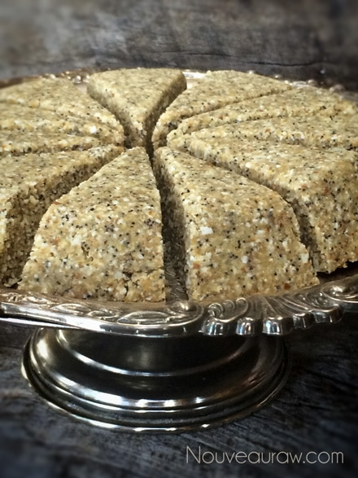
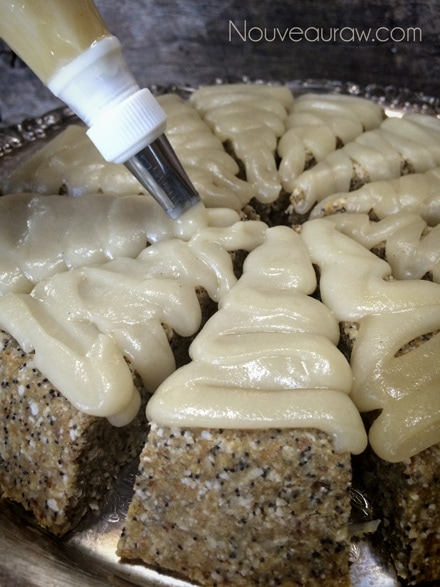

Meyer Lemon Poppy Seed Scones with Glaze
Meyer Lemon Poppy Seed Scones with Glaze

Scones are normally a small unsweetened or lightly sweetened biscuit-like cake made from flour, fat, and milk and sometimes having added fruit. Through the transformation of ingredients, I turned oats, buckwheat, and coconut into flour… instead of milk I used Young Thai coconut meat and lightly sweetened the scones with dried fruit and a bit of maple syrup.
There isn’t much in the cooking world that can’t be shaped, molded, or converted into a high enzymatic, nutrient-dense food that often tastes much better than its counterpart.
Textural-wise I feel they are spot on with feeling like a biscuit-like cake. Not too dry but not too moist. The Meyer lemons really brought this scone to life. If you don’t have access to Meyer lemons, no need to fret, you can use regular lemons.
Meyer lemons are a real treat as they are sweeter and much less acidic tasting than regular lemons. This means that they have a great lemon flavor, but lack the “bite” of a regular lemon. The main thing that I want to stress here is that you only use freshly squeezed lemon juice. Stay away from bottled lemon juice, it just doesn’t taste the same and can really put a damper on the recipe.
When it comes to our health it is important to maintain a slightly positive alkaline state in order to fight off illnesses. Even though lemons appear to be acidic to taste, lemons are one of the most alkaline foods and help to push our bodies to the required pH alkaline state of around 7.4.
In this recipe, you will be using lemon juice and lemon zest so I recommend using organic lemons if at all possible. Be sure to really wash the skins well before zesting. It is also easier to zest the lemons before juicing them… how do I know? Just ask the top of my ruffled fingers tips. hehe After creating the scones and you are busy cleaning up the kitchen, don’t toss out the lemon rinds. They are perfect for creating your own home cleaning supplies. Learn how to make your own Citrus Cleanser.
Ingredients:
yields 12 scones and extra cookies
Scone dough:
- 6 Tbsp raw coconut butter, warmed to liquid
- 1/4 cup maple syrup or any liquid sweetener
- 1/4 cup lemon juice
- 1 tsp vanilla extract
- Pinch Himalayan pink salt
Preparation:
Scone dough:
- In a small bowl cover the pitted dates with enough warm water to cover them. This will help to soften them for blending purposes. Once ready to add to the recipe, drain the soak water. Keep this for now.
- In a large mixing bowl combine the coconut flour, buckwheat flour, oat groat flour, flax, poppy seeds, and salt.
- In the food processor, fitted with the “S” blade, add the drain dates, coconut flesh, maple syrup, lemon juice and zest, and vanilla. Process until it creates a smooth sauce. Pour over the dry ingredients in the mixing bowl.
- Add the almond pulp and hand mix everything together.
- If the batter feels too dry, start adding some of the dates soak water 1 Tbsp at a time.
- The batter should be moist enough to hold form when rolled into a ball.
- Press the batter into a pie pan, leveling it flat. If you have extra batter, create small cookies, cake pops, or bars with it. Let the pie pan rest for 30 minutes, allowing the flax to bind all the ingredients together.
- Flip the pan over onto a cutting board and cut into triangle shapes. Place on the mesh sheet that comes with the dehydrator.
- Dry at 145 degrees (F) for 1 hour, then reduce to 115 degrees (F) for 2-4 hours. Just long enough to form a firm exterior and a moist interior.
Glaze:
- In a small bowl combine the coconut butter, maple syrup, lemon juice, vanilla, and salt. With a fork, whisk it together until smooth and creamy. If it starts to get too thick due to the cool ambient air, place the bowl in the dehydrator set at 145 degrees (F) until it softens.
- Spoon over the scones or place in a piping bag and drizzle the glaze over the tops of the scones.
- I created roses out of the leftover glaze. I used a silicone rose mold that is similar to (this) one. To make them, just pipe the glaze into the molds and place the mold in the freezer until they firm up. They pop out beautifully!
Culinary Explanations:
- Why do I start the dehydrator at 145 degrees (F)? Click (here) to learn the reason behind this.
- When working with fresh ingredients it is important to taste test as you build a recipe. Learn why (here).
- Don’t own a dehydrator? Learn how to use your oven (here). I do however truly believe that it is a worthwhile investment. Click (here) to learn what I use.

Pipe or spoon the glaze over the scones.

If you look closely at these two photos, you will notice that the glaze starts to turn
more of awhite(ish) color as it dries. The glaze will dry firm to the touch.
For decoration I piped the glaze into rose molds.
I had some left-over scone batter so I made some cookie shapes and
decorated them a bit with the glaze and roses.
© AmieSue.com